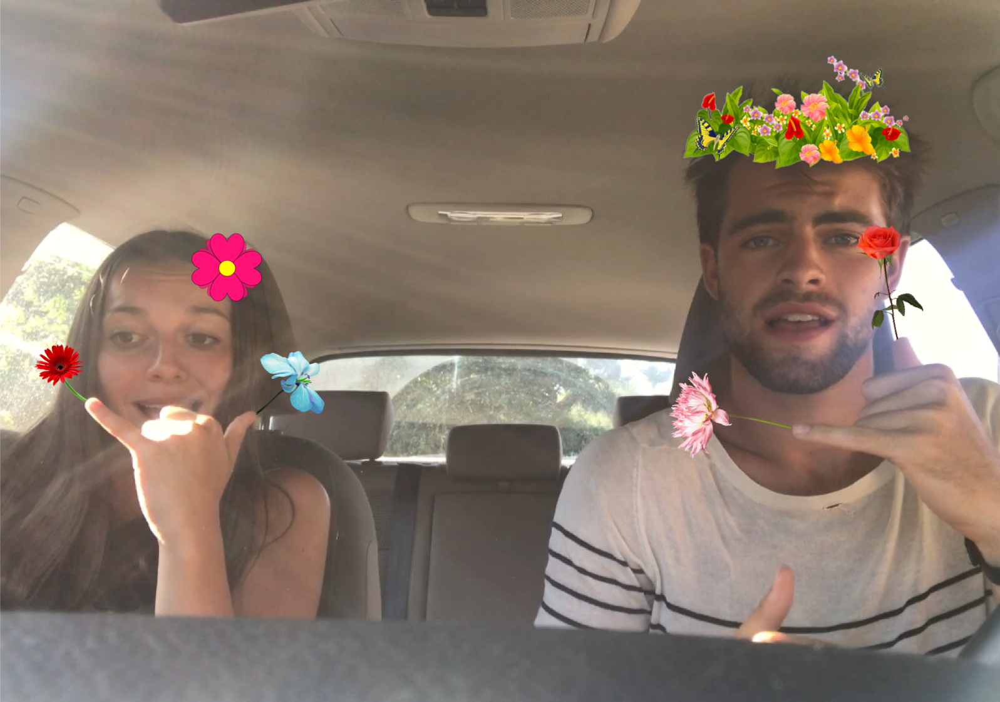
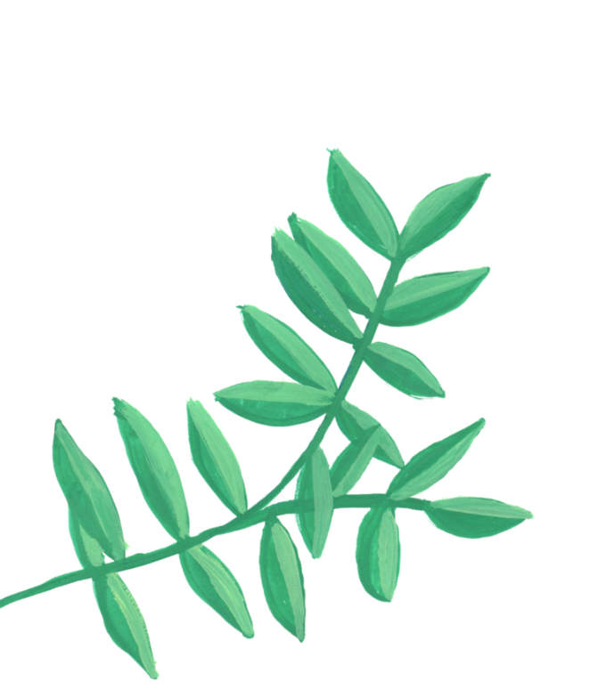
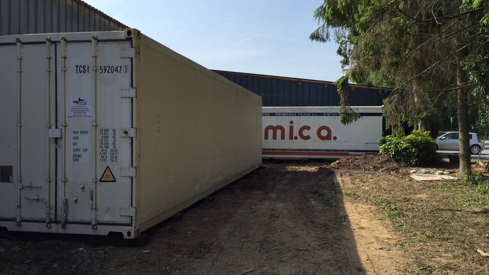
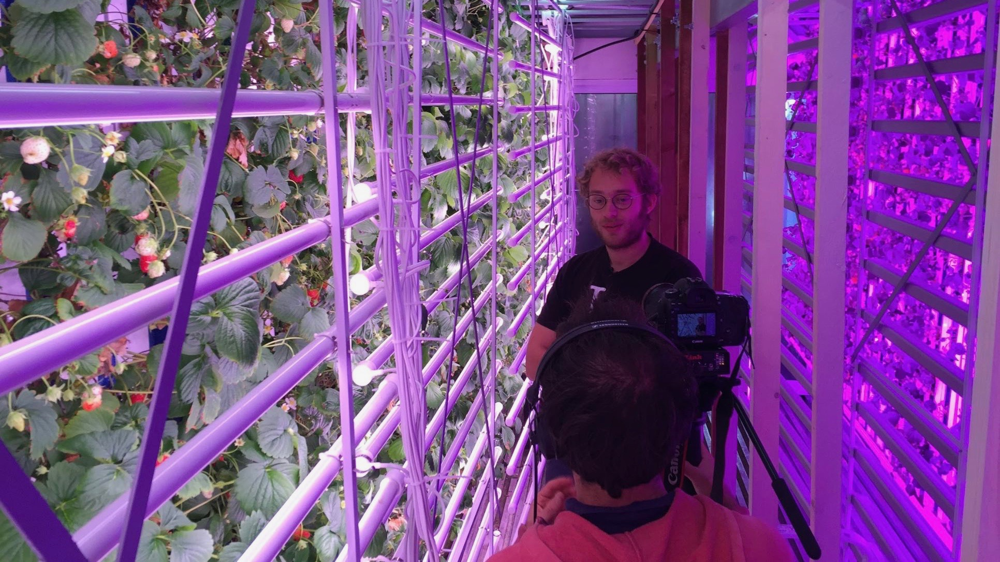
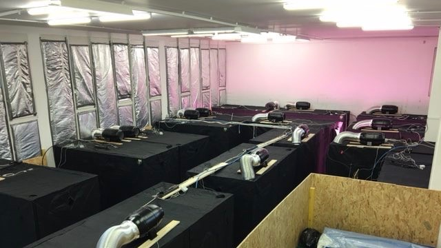
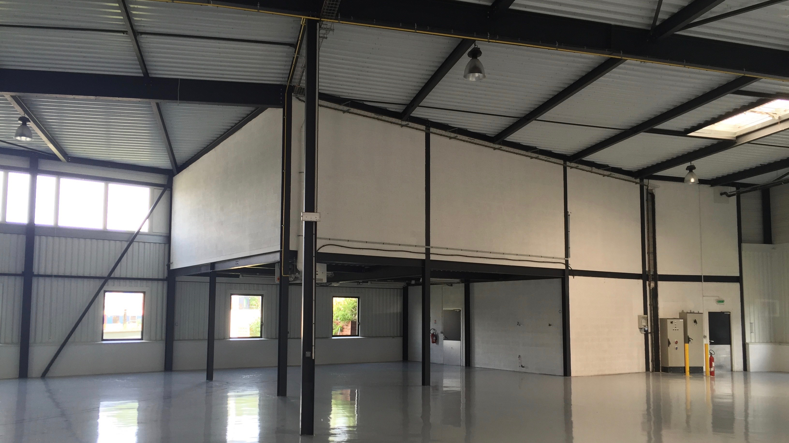
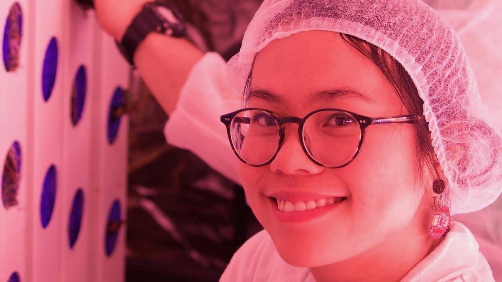

L’aventure a commencé en plantant des fraises dans l’appartement d’un oncle d'Eliso. Installée dans la salle de jeu des enfants, les conditions de plantation étaient un peu archaïques mais ça l’a fait !
Hello
Tous les deux enfants de fleuristes, on a confectionné pendant toute notre enfance des bouquets magnifiques. Alors quand on a posé nos valises en ville, il n’était pas question de laisser ce plaisir de côté. Aujourd’hui, on invente un système permettant de rendre accessible à tous les plus belles fleurs et sans pesticide.
Eliso & Nicolas
On vous dit tout !

Janvier 2015
C’est l’heure de bricoler


Mars 2015
Des premières fleurs magnifiques !
On produisait quelques fleurs certes, mais magnifiques. Un premier pas encourageant. Il fallait maintenant trouver un vrai terrain de jeu permettant de produire directement en ville.

Avril 2015
A la quête d’une brique de Lego
Un vieux container traînait dans la cour de la ferme des parents d'Eliso. Cet espace semblait idéal. C’est une brique de Lego, recyclable, transportable et qui peut être placée partout ! Il ne restait plus qu’à transformer ces 33m2 en paradis pour fleurs.

Produire dans un container, vraiment ?


Mai 2015
Vous voyez que c’est possible ?
Après avoir travaillé jours et nuits pendant des mois, on arrive finalement à recréer un paradis pour fleurs dans ce container. Il est temps de faire connaître la solution.

Juin 2015
Adieu Localocal, bonjour Floriswag
Avant de révéler le projet au grand jour, un rafraîchissement s’imposait. À cette époque, on s’appelait Localocal. Ce nom à première vu simple, parlant, international n’était en fait pas du tout adapté. Avec l’aide de The Family, une nouvelle identité a vu le jour. C’était le début de Floriswag.

Octobre 2015
Un premier emplacement dans Paris
Notre prototype s’élance sur l’A1, des centaines de fleurs à son bord. Il rejoint son nouvel emplacement au coeur de Paris, à Bercy. Sur place on produit 1 bouquet par jour. C’est minime mais ils sont exceptionnels.
La rencontre avec notre communauté

Novembre 2016
L’accueil du projet par les médias
Les médias se régalent, et plus de 1000 visites dans les coulisses de notre Swagtainer sont faites en 3 mois. Le pari est réussi : il est possible d’obtenir de la couleur en cultivant localement.
Mars 2016
On passe à la vitesse supérieure
Une première levée de 500 000€ nous permet d’embaucher nos responsables ingénierie et botanique. On était alors 4 : Nicolas, Eliso, Arthur et Marie. Tout s’accélère.

Avril 2016
Nos premiers locaux
Après avoir cultivé dans le sous-sol de The Family, il est temps d’emménager dans nos propres locaux. En route pour le 20ème arrondissement de Paris, pour y réaliser les prochains tests (densité, variété, humidité, température, lumière…).
En route pour nos premières ventes !

Novembre 2016
La levée de fonds
On réalise une nouvelle levée de fonds d’un peu moins de 4 millions d’euros. L’équipe s’agrandit, c’est l’occasion de déménager dans des nouveaux locaux de 1500m2 à la Courneuve.
Janvier 2017
Une équipe, une mission
Notre mission est ambitieuse. Nous voulons rendre accessible à tous des fleurs magnifiques et sans pesticide. Pour y arriver, il faut attirer les meilleurs, ceux capables de challenger le statut quo, de réinventer le système floral de demain. On reçoit plus de 700 candidatures entrantes, et l’équipe passe de 2 à 30 employés en 1 an.


Mai 2017
La Recherche & Développement se poursuit
Après 2 ans de travail, on a réussi à inventer une nouvelle façon de produire. Il est désormais possible d’être 120X plus productif, sans pesticide ni OGM, en utilisant 90% moins d’eau et de nutriments et uniquement des énergies renouvelables. Et surtout c’est le retour des vraies couleurs grâce à une production locale.
Mars 2015
Des premières fleurs magnifiques !
On produisait quelques fleurs certes, mais magnifiques. Un premier pas encourageant. Il fallait maintenant trouver un vrai terrain de jeu permettant de produire directement en ville.
Septembre 2017
A la rencontre de notre communauté
Ca y est ! Nous rencontrons (enfin) nos premiers clients, ceux qui suivent l’aventure depuis le début. C’est fou ! Notre seule hâte ? Pouvoir tous vous rencontrer et vous permettre de cueillir nos fleurs.
Aujourd'hui
Une touche d’optimisme pour l’avenir ?
Aujourd’hui, on cultive des fleurs magnifiques directement à Paris. Demain, ce sera tous types de plantes, dans les plus grandes villes du monde. Souriez, tout est possible.